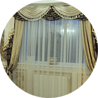

Княжi
Гардини
Гардини
УКР
РУС
Наши услуги


Пошив
Ламбрекенiв
Ламбрекенiв
Создают ощущение легкости и элегантности. Можно отделать кромки на ваш вкус. А так же добавить орнамент.
И выбрать вам понравившуюся ткань.
И выбрать вам понравившуюся ткань.

Пошив
штор i тюля
штор i тюля
Вы получите то, что искали! Богатый выбор тканей и материалов позволит осуществить любую вашу задумку.

Римские и рулонные
шторы
шторы
Уникальность Римских штор делает возможным осуществление любых дизайнерских планов. Её можно закрепить на стене, поместить в нишу, любой оконный проём.

Шторы
на люверсах
на люверсах
Максимальная простота и функциональность. все больше людей отдают предпочтение простым, но не менее оригинальным шторам люверсам.